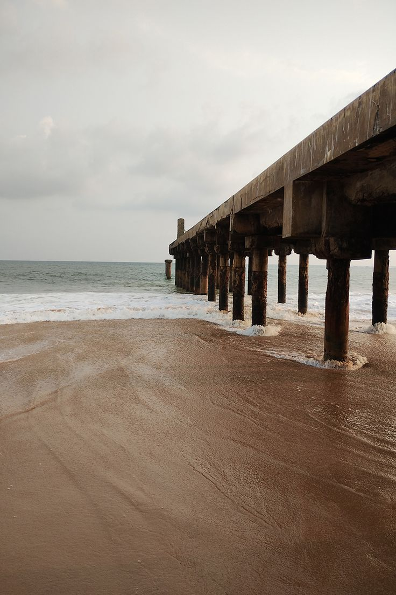
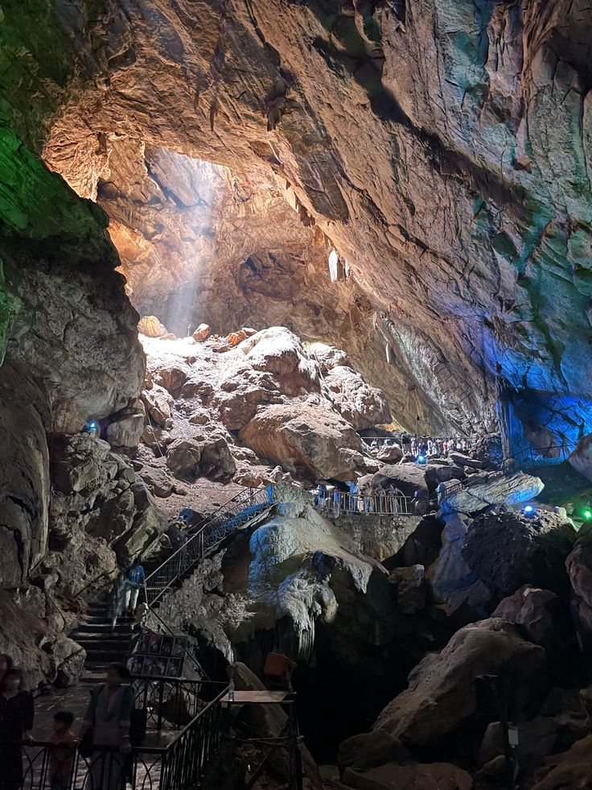
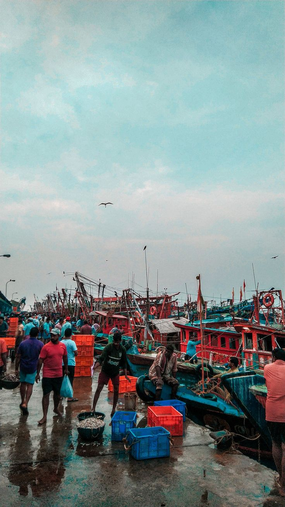
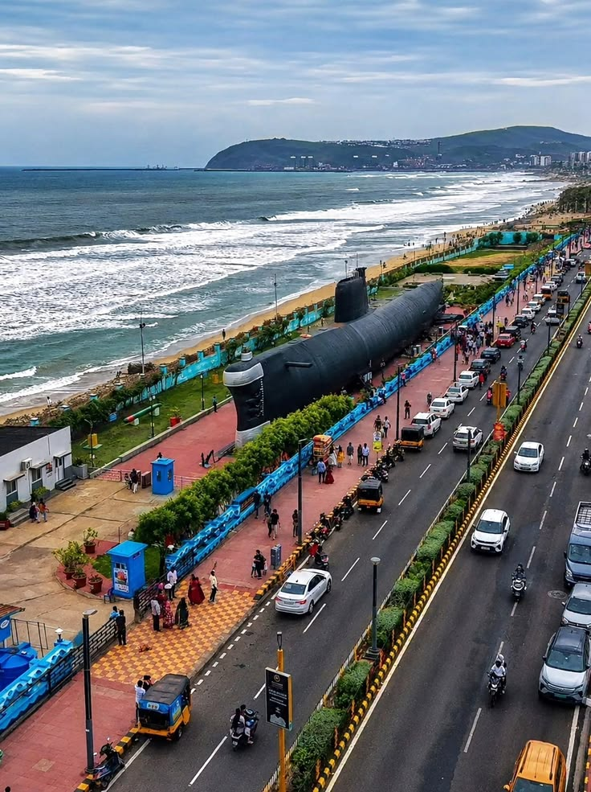

Beach
The beach is a beautiful place to enjoy the ocean, walk on the sand, and watch the waves.
Read More
Caves
The caves are interesting places with large rocks and natural formations to explore.
Read More
Harbour
The harbour is a busy place where fishing boats gather and people enjoy views of the sea.
Read MoreKailasagiri
Kailasagiri is a hilltop attraction known for its green surroundings and beautiful views of Visakhapatnam.
Read More
RK Beach
RK Beach is a popular place in Visakhapatnam to enjoy the sea, take walks, and watch the sunset.
Read More
Submarine
The submarine attraction in Visakhapatnam lets visitors learn about naval history and life inside a submarine.
Read MoreQuestions and Answers
1. Why do we need a viewport meta tag?
The viewport meta tag helps the page fit the width of a phone screen and makes the content easier to read.
2. When two rules use flex-direction, which one takes priority?
If both rules have the same priority, the rule that comes later in the CSS file takes priority.
3. How do you change CSS for a web page displayed on a phone?
We use a media query to change the layout, image sizes, and navigation for smaller screens.
4. Pick a website you use on your phone. What changes on mobile?
YouTube shows videos in a single column on a phone, and its navigation is arranged to fit the smaller screen.
5. What breakpoint did you choose, and why?
I chose 600 pixels because the sidebar and cards need more space on larger screens. Below this width, I stack the content to make it easier to use.